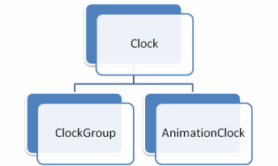

Clocks
Description
Although clocks are rarelly controlled by the user in code (they are not visible from XAML) it's important to understand how they work.
Timelines deriving from AnimationTimeline are controlled by AnimationClock, and those deriving from TimelineGroup are controlled by ClockGroup.
For every active timeline, there is a clock in the Time Manager, and if the timeline is complex, there is the same hierarchy of clocks running parallel to the timeline (for example, if a Storyboard has 2 DoubleAnimation children, there is a total of 3 clocks, one ClockGroup for the Storyboard and two AnimationClocks for the DoubleAnimations that are children of the Storyboard). This hierarchy of running clocks allows a well defined order that allow controlling things like the speed ratio, or stop all the clock hierarchy.
Clock Chain
But this can be more complex even. 2 or more timelines can affect the same property in the same object, running several clocks in linear mode, one after another.
Lets start with the simple mode, when only a clock is affecting a property. The clock needs to call the AnimationTimeline::GetAnimatedValue to assign the correct value to the property. For this method, the clock passes 3 arguments:
- DefaultOrigin: this is the value that the property has just before this clock started to animate (taken with GetValue method). Even if the property was previously animated, the active value is stored and passed as origin every time
- DefaultDestination: this is the base value of the property, this is, the clean value without animations (taken with GetBaseValue)
- Clock: the clock itself so the timeline can get the current progress and time of the clock to return the correct interpolated value.
To start a clock chain, the animations must be started with HandoffBehavior_Compose mode. In this case, the clocks are stored at the end of the chain as they are being inserted. When the timemanager ticks the clocks and a new value has to be set to the target property, the clocks call it AnimationTimeline::GetAnimatedValue sequentially, passing the result of the call as default origin for the next clock.
Further information can be consulted in the WPF official documentation (http://msdn.microsoft.com/en-us/library/aa969813.aspx)